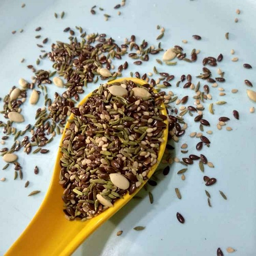

તલ અળસી નો મુખવાસ |

|
|
- 1 વાટકી તલ
- 1 વાટકી અળસી
- 2 ટે.સ્પૂન મીઠા વરિયાળી દાણા
- 1 ચમચી સંચર પાઉડર
- 1 ચમચી મીઠું
- 1 ચમચી હળદર
|
|
તલ અને અળસી સાફ કરી તેમાં મીઠું, સંચળ અને હળદર ઉમેરી,2 ચમચી પાણી નાખી ઢાંકી 4,5 કલાક રેવા દેવું.
Step2:
હવે તેને એક પેન માં લઇ ધીમા તાપે સેકી લેવું.
Step3:
મીઠા વરિયાળી દાણા જરૂર મુજબ ઉમેરી દેવા.અને એક બોટલ માં ભરી ઉપયોગ માં લેવા.